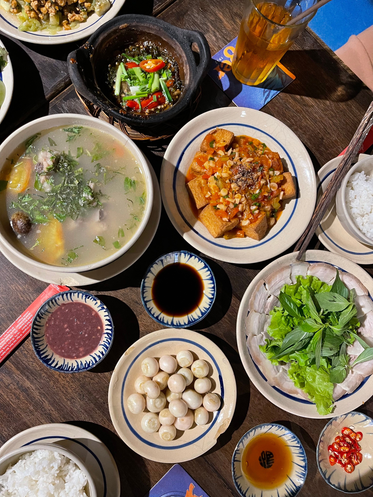

Home-made Hmong food is hard to find. Because our foods have always stayed local and close to home, there are not many outside the community who have had the chances to try them. Hmong dishes rarely appear on menus or become the main focus compared to other familiar foods. Even when Hmong families have spread across the globe, with our foods adapting and changing along the years, that nostalgic feeling is still rarely experienced from the world.
Here at Niam's Kitchen, you can experience that home-style feeling where every dish is made by using our family's recipes where first-time customers can be treated just as warm as our family. Hmong culture has always treasured family bonds, and what better way to keep that feeling than sharing foods with our customers. Each dish has a home within, so there is always a seat open for you!
